Summary
This experiment investigates canvas stretching tension. Full factorial of staple spacing, stretcher bar thickness, canvas weight, and pre-priming to maximize surface flatness and minimize warping.
The design varies 4 factors: staple spacing cm (cm), ranging from 3 to 8, bar mm (mm), ranging from 18 to 40, canvas gsm (g/m2), ranging from 200 to 400, and pre prime, ranging from none to gesso. The goal is to optimize 2 responses: flatness (pts) (maximize) and warp mm (mm) (minimize). Fixed conditions held constant across all runs include size = 60x80cm, canvas = cotton_duck.
A full factorial design was used to explore all 16 possible combinations of the 4 factors at two levels. This guarantees that every main effect and interaction can be estimated independently, at the cost of a larger experiment (16 runs).
Quadratic response surface models were fitted to capture potential curvature and factor interactions. The RSM contour plots below visualize how pairs of factors jointly affect each response.
Key Findings
For flatness, the most influential factors were bar mm (50.0%), canvas gsm (35.4%), staple spacing cm (10.4%). The best observed value was 8.1 (at staple spacing cm = 3, bar mm = 18, canvas gsm = 400).
For warp mm, the most influential factors were canvas gsm (45.1%), bar mm (27.5%), staple spacing cm (15.7%). The best observed value was 1.8 (at staple spacing cm = 8, bar mm = 18, canvas gsm = 400).
Recommended Next Steps
- Consider whether any fixed factors should be varied in a future study.
Experimental Setup
Factors
| Factor | Low | High | Unit |
|---|
staple_spacing_cm | 3 | 8 | cm |
bar_mm | 18 | 40 | mm |
canvas_gsm | 200 | 400 | g/m2 |
pre_prime | none | gesso | |
Fixed: size = 60x80cm, canvas = cotton_duck
Responses
| Response | Direction | Unit |
|---|
flatness | ↑ maximize | pts |
warp_mm | ↓ minimize | mm |
Configuration
{
"metadata": {
"name": "Canvas Stretching Tension",
"description": "Full factorial of staple spacing, stretcher bar thickness, canvas weight, and pre-priming to maximize surface flatness and minimize warping"
},
"factors": [
{
"name": "staple_spacing_cm",
"levels": [
"3",
"8"
],
"type": "continuous",
"unit": "cm"
},
{
"name": "bar_mm",
"levels": [
"18",
"40"
],
"type": "continuous",
"unit": "mm"
},
{
"name": "canvas_gsm",
"levels": [
"200",
"400"
],
"type": "continuous",
"unit": "g/m2"
},
{
"name": "pre_prime",
"levels": [
"none",
"gesso"
],
"type": "categorical",
"unit": ""
}
],
"fixed_factors": {
"size": "60x80cm",
"canvas": "cotton_duck"
},
"responses": [
{
"name": "flatness",
"optimize": "maximize",
"unit": "pts"
},
{
"name": "warp_mm",
"optimize": "minimize",
"unit": "mm"
}
],
"settings": {
"operation": "full_factorial",
"test_script": "use_cases/284_canvas_stretching/sim.sh"
}
}
Experimental Matrix
The Full Factorial Design produces 16 runs. Each row is one experiment with specific factor settings.
| Run | staple_spacing_cm | bar_mm | canvas_gsm | pre_prime |
|---|
| 1 | 3 | 40 | 400 | gesso |
| 2 | 8 | 18 | 200 | gesso |
| 3 | 3 | 40 | 200 | gesso |
| 4 | 3 | 40 | 400 | none |
| 5 | 8 | 40 | 400 | none |
| 6 | 8 | 18 | 400 | none |
| 7 | 8 | 40 | 200 | none |
| 8 | 8 | 18 | 200 | none |
| 9 | 3 | 18 | 200 | gesso |
| 10 | 3 | 18 | 400 | none |
| 11 | 8 | 40 | 200 | gesso |
| 12 | 8 | 40 | 400 | gesso |
| 13 | 3 | 40 | 200 | none |
| 14 | 8 | 18 | 400 | gesso |
| 15 | 3 | 18 | 200 | none |
| 16 | 3 | 18 | 400 | gesso |
Step-by-Step Workflow
1
Preview the design
$ doe info --config use_cases/284_canvas_stretching/config.json
2
Generate the runner script
$ doe generate --config use_cases/284_canvas_stretching/config.json \
--output use_cases/284_canvas_stretching/results/run.sh --seed 42
3
Execute the experiments
$ bash use_cases/284_canvas_stretching/results/run.sh
4
Analyze results
$ doe analyze --config use_cases/284_canvas_stretching/config.json
5
Get optimization recommendations
$ doe optimize --config use_cases/284_canvas_stretching/config.json
6
Multi-objective optimization
With 2 competing responses, use --multi to find the best compromise via Derringer–Suich desirability.
$ doe optimize --config use_cases/284_canvas_stretching/config.json --multi
7
Generate the HTML report
$ doe report --config use_cases/284_canvas_stretching/config.json \
--output use_cases/284_canvas_stretching/results/report.html
Features Exercised
| Feature | Value |
|---|
| Design type | full_factorial |
| Factor types | continuous (3), categorical (1) |
| Arg style | double-dash |
| Responses | 2 (flatness ↑, warp_mm ↓) |
| Total runs | 16 |
Analysis Results
Generated from actual experiment runs using the DOE Helper Tool.
Response: flatness
Top factors: bar_mm (50.0%), canvas_gsm (35.4%), staple_spacing_cm (10.4%).
ANOVA
| Source | DF | SS | MS | F | p-value |
|---|
| Source | DF | SS | MS | F | p-value |
| staple_spacing_cm | 1 | 0.0625 | 0.0625 | 0.030 | 0.8697 |
| bar_mm | 1 | 1.4400 | 1.4400 | 0.687 | 0.4450 |
| canvas_gsm | 1 | 0.7225 | 0.7225 | 0.345 | 0.5827 |
| pre_prime | 1 | 0.0100 | 0.0100 | 0.005 | 0.9476 |
| staple_spacing_cm*bar_mm | 1 | 0.3025 | 0.3025 | 0.144 | 0.7197 |
| staple_spacing_cm*canvas_gsm | 1 | 1.0000 | 1.0000 | 0.477 | 0.5206 |
| staple_spacing_cm*pre_prime | 1 | 3.0625 | 3.0625 | 1.460 | 0.2809 |
| bar_mm*canvas_gsm | 1 | 1.1025 | 1.1025 | 0.526 | 0.5009 |
| bar_mm*pre_prime | 1 | 0.6400 | 0.6400 | 0.305 | 0.6044 |
| canvas_gsm*pre_prime | 1 | 0.3025 | 0.3025 | 0.144 | 0.7197 |
| Error | 5 | 10.4850 | 2.0970 | | |
| Total | 15 | 19.1300 | 1.2753 | | |
Pareto Chart

Main Effects Plot
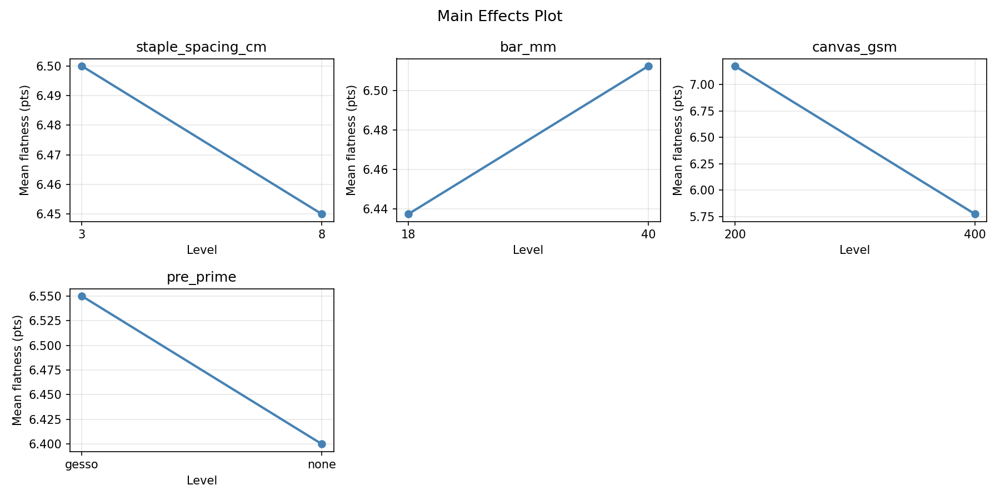
Normal Probability Plot of Effects
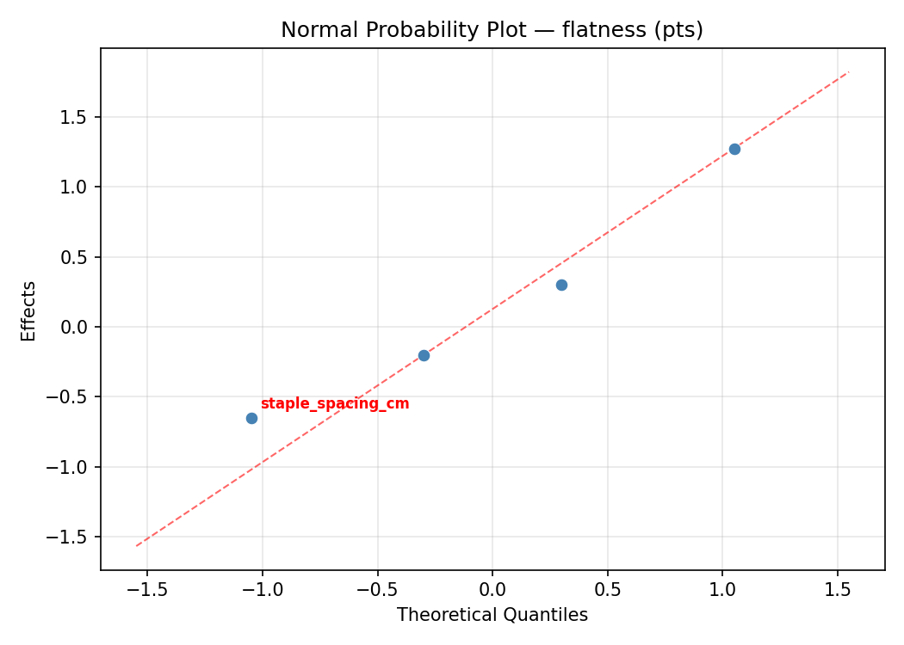
Half-Normal Plot of Effects
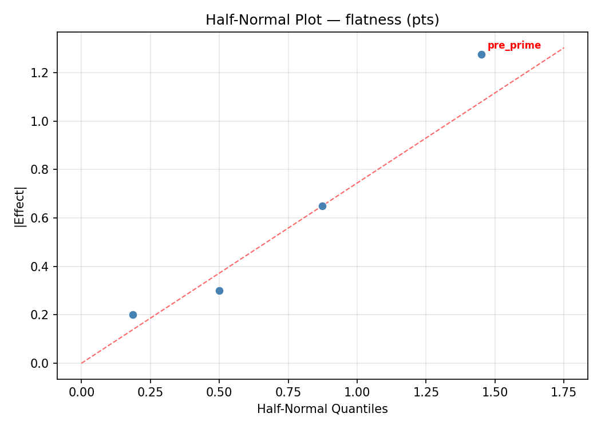
Model Diagnostics
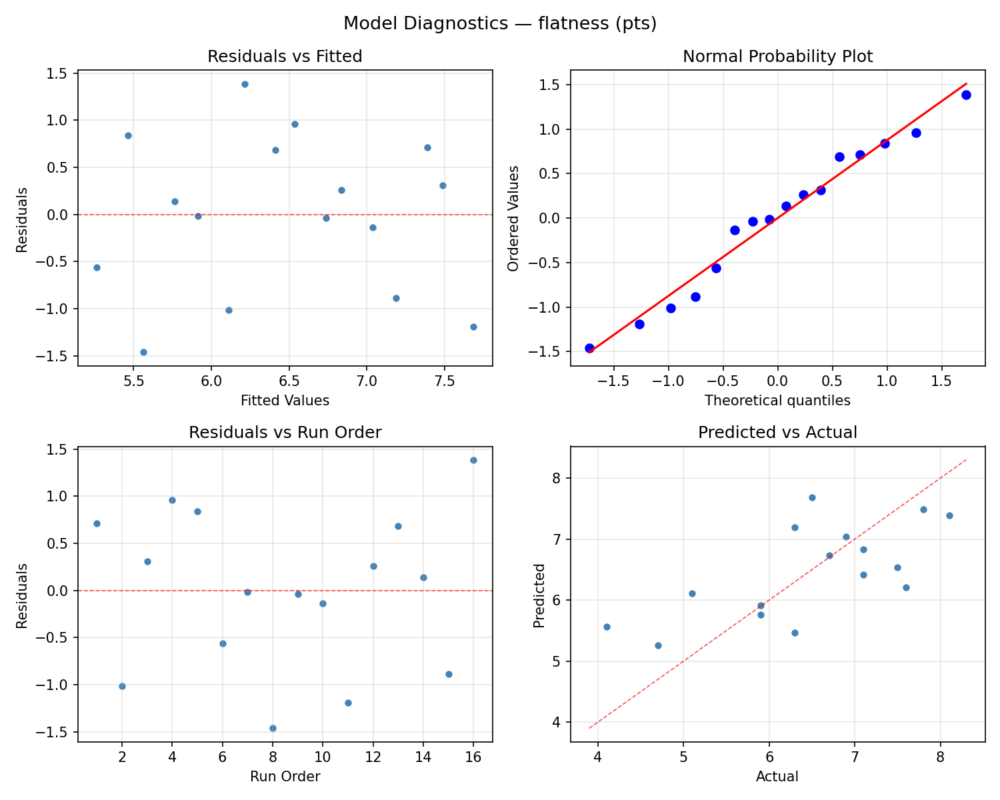
Response: warp_mm
Top factors: canvas_gsm (45.1%), bar_mm (27.5%), staple_spacing_cm (15.7%).
ANOVA
| Source | DF | SS | MS | F | p-value |
|---|
| Source | DF | SS | MS | F | p-value |
| staple_spacing_cm | 1 | 0.1600 | 0.1600 | 0.127 | 0.7365 |
| bar_mm | 1 | 0.4900 | 0.4900 | 0.388 | 0.5608 |
| canvas_gsm | 1 | 1.3225 | 1.3225 | 1.047 | 0.3532 |
| pre_prime | 1 | 0.0900 | 0.0900 | 0.071 | 0.8002 |
| staple_spacing_cm*bar_mm | 1 | 0.3025 | 0.3025 | 0.239 | 0.6453 |
| staple_spacing_cm*canvas_gsm | 1 | 0.2500 | 0.2500 | 0.198 | 0.6750 |
| staple_spacing_cm*pre_prime | 1 | 2.1025 | 2.1025 | 1.664 | 0.2535 |
| bar_mm*canvas_gsm | 1 | 1.9600 | 1.9600 | 1.551 | 0.2681 |
| bar_mm*pre_prime | 1 | 1.8225 | 1.8225 | 1.442 | 0.2835 |
| canvas_gsm*pre_prime | 1 | 1.4400 | 1.4400 | 1.140 | 0.3345 |
| Error | 5 | 6.3175 | 1.2635 | | |
| Total | 15 | 16.2575 | 1.0838 | | |
Pareto Chart
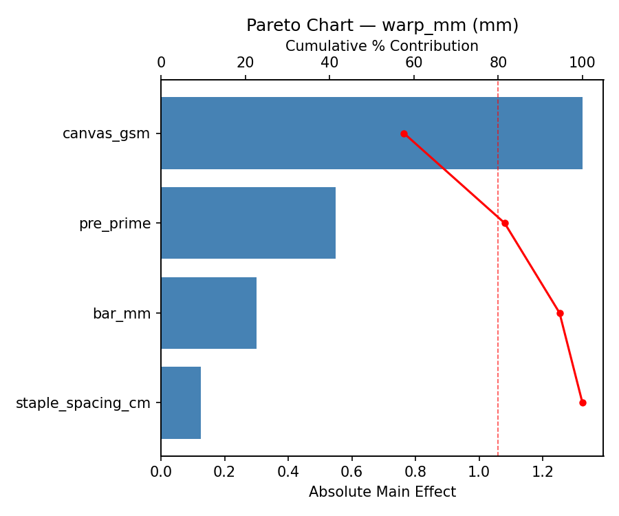
Main Effects Plot
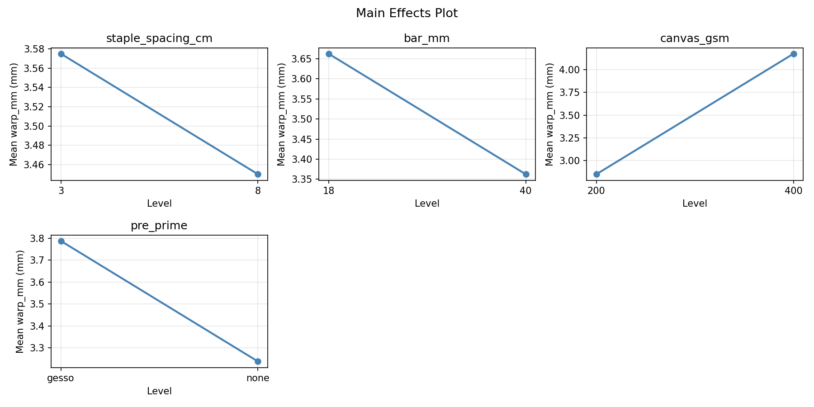
Normal Probability Plot of Effects
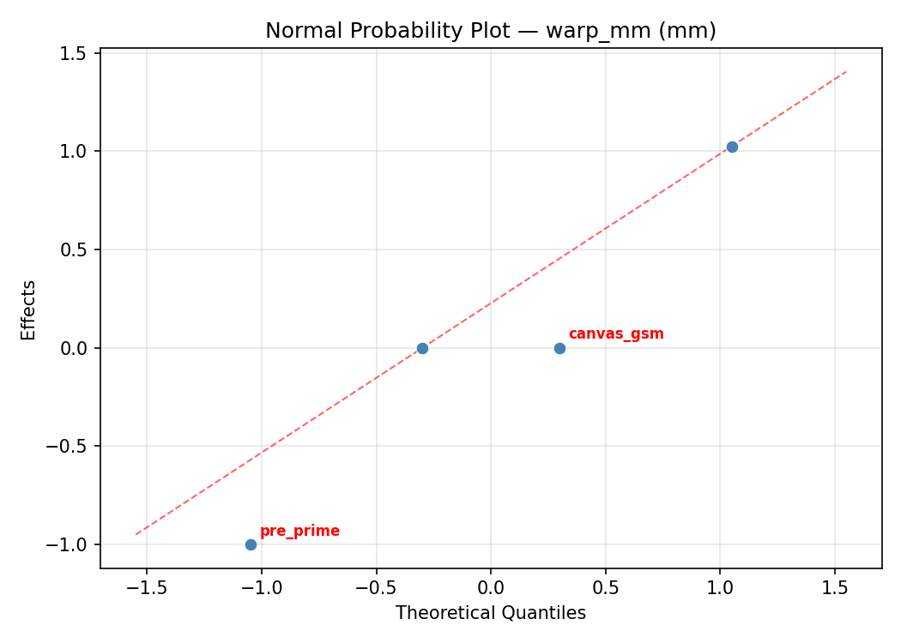
Half-Normal Plot of Effects
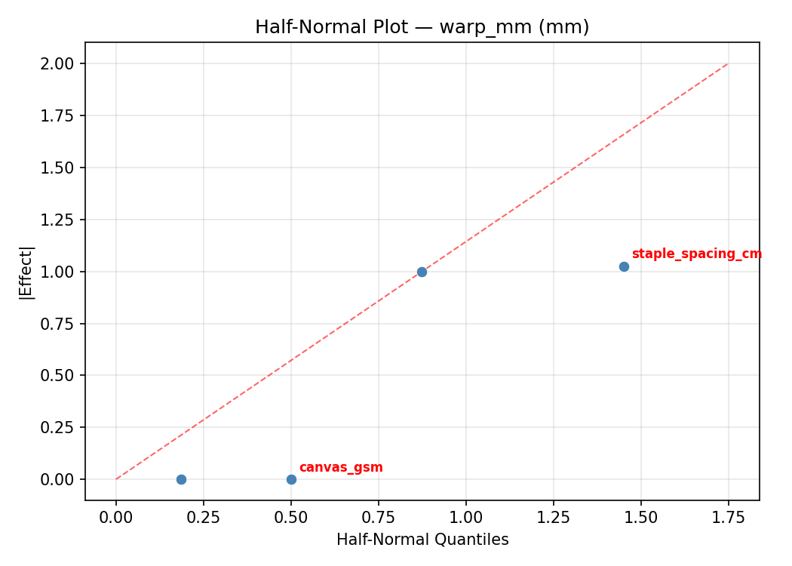
Model Diagnostics
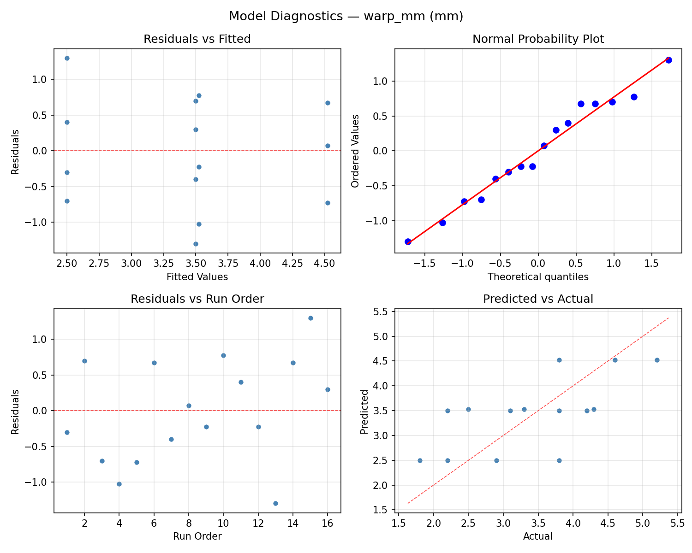
Response Surface Plots
3D surfaces fitted with quadratic RSM. Red dots are observed data points.
flatness bar mm vs canvas gsm
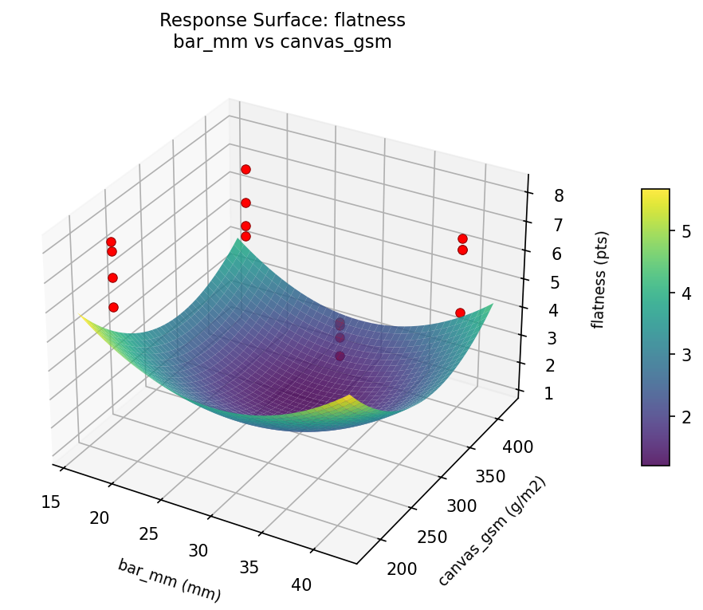
flatness staple spacing cm vs bar mm

flatness staple spacing cm vs canvas gsm
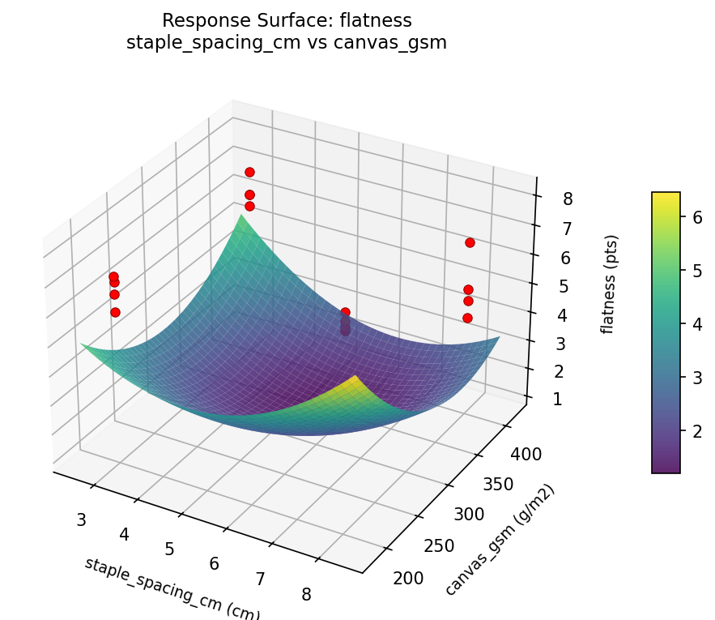
warp mm bar mm vs canvas gsm
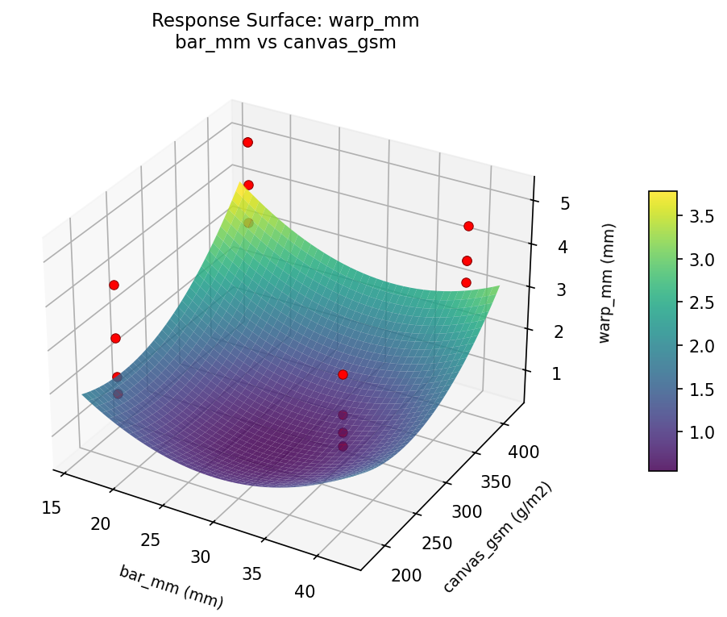
warp mm staple spacing cm vs bar mm
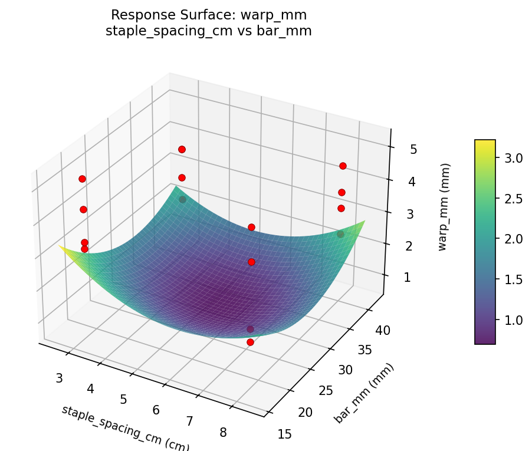
warp mm staple spacing cm vs canvas gsm

Multi-Objective Optimization
When responses compete, Derringer–Suich desirability finds the best compromise.
Each response is scaled to a 0–1 desirability, then combined via a weighted geometric mean.
Overall Desirability
D = 0.9130
Per-Response Desirability
| Response | Weight | Desirability | Predicted | Dir |
|---|
flatness |
1.5 |
|
7.80 0.8864 7.80 pts |
↑ |
warp_mm |
1.0 |
|
1.80 0.9545 1.80 mm |
↓ |
Recommended Settings
| Factor | Value |
|---|
staple_spacing_cm | 8 cm |
bar_mm | 40 mm |
canvas_gsm | 400 g/m2 |
pre_prime | none |
Source: from observed run #3
Trade-off Summary
Sacrifice = how much worse than single-objective best.
| Response | Predicted | Best Observed | Sacrifice |
|---|
warp_mm | 1.80 | 1.80 | +0.00 |
Top 3 Runs by Desirability
| Run | D | Factor Settings |
|---|
| #1 | 0.9102 | staple_spacing_cm=3, bar_mm=18, canvas_gsm=400, pre_prime=none |
| #4 | 0.7975 | staple_spacing_cm=8, bar_mm=18, canvas_gsm=400, pre_prime=none |
Model Quality
| Response | R² | Type |
|---|
warp_mm | 0.4716 | linear |
Full Multi-Objective Output
============================================================
MULTI-OBJECTIVE OPTIMIZATION
Method: Derringer-Suich Desirability Function
============================================================
Overall desirability: D = 0.9130
Response Weight Desirability Predicted Direction
---------------------------------------------------------------------
flatness 1.5 0.8864 7.80 pts ↑
warp_mm 1.0 0.9545 1.80 mm ↓
Recommended settings:
staple_spacing_cm = 8 cm
bar_mm = 40 mm
canvas_gsm = 400 g/m2
pre_prime = none
(from observed run #3)
Trade-off summary:
flatness: 7.80 (best observed: 8.10, sacrifice: +0.30)
warp_mm: 1.80 (best observed: 1.80, sacrifice: +0.00)
Model quality:
flatness: R² = 0.6606 (linear)
warp_mm: R² = 0.4716 (linear)
Top 3 observed runs by overall desirability:
1. Run #3 (D=0.9130): staple_spacing_cm=8, bar_mm=40, canvas_gsm=400, pre_prime=none
2. Run #1 (D=0.9102): staple_spacing_cm=3, bar_mm=18, canvas_gsm=400, pre_prime=none
3. Run #4 (D=0.7975): staple_spacing_cm=8, bar_mm=18, canvas_gsm=400, pre_prime=none
Full Analysis Output
=== Main Effects: flatness ===
Factor Effect Std Error % Contribution
--------------------------------------------------------------
bar_mm 0.6000 0.2823 50.0%
canvas_gsm 0.4250 0.2823 35.4%
staple_spacing_cm -0.1250 0.2823 10.4%
pre_prime 0.0500 0.2823 4.2%
=== ANOVA Table: flatness ===
Source DF SS MS F p-value
-----------------------------------------------------------------------------
staple_spacing_cm 1 0.0625 0.0625 0.030 0.8697
bar_mm 1 1.4400 1.4400 0.687 0.4450
canvas_gsm 1 0.7225 0.7225 0.345 0.5827
pre_prime 1 0.0100 0.0100 0.005 0.9476
staple_spacing_cm*bar_mm 1 0.3025 0.3025 0.144 0.7197
staple_spacing_cm*canvas_gsm 1 1.0000 1.0000 0.477 0.5206
staple_spacing_cm*pre_prime 1 3.0625 3.0625 1.460 0.2809
bar_mm*canvas_gsm 1 1.1025 1.1025 0.526 0.5009
bar_mm*pre_prime 1 0.6400 0.6400 0.305 0.6044
canvas_gsm*pre_prime 1 0.3025 0.3025 0.144 0.7197
Error 5 10.4850 2.0970
Total 15 19.1300 1.2753
=== Interaction Effects: flatness ===
Factor A Factor B Interaction % Contribution
------------------------------------------------------------------------
staple_spacing_cm pre_prime 0.8750 30.7%
bar_mm canvas_gsm -0.5250 18.4%
staple_spacing_cm canvas_gsm 0.5000 17.5%
bar_mm pre_prime 0.4000 14.0%
canvas_gsm pre_prime -0.2750 9.6%
staple_spacing_cm bar_mm -0.2750 9.6%
=== Summary Statistics: flatness ===
staple_spacing_cm:
Level N Mean Std Min Max
------------------------------------------------------------
3 8 6.5375 1.1999 4.7000 8.1000
8 8 6.4125 1.1332 4.1000 7.8000
bar_mm:
Level N Mean Std Min Max
------------------------------------------------------------
18 8 6.1750 0.7166 4.7000 7.1000
40 8 6.7750 1.4190 4.1000 8.1000
canvas_gsm:
Level N Mean Std Min Max
------------------------------------------------------------
200 8 6.2625 1.4182 4.1000 8.1000
400 8 6.6875 0.7864 5.1000 7.8000
pre_prime:
Level N Mean Std Min Max
------------------------------------------------------------
gesso 8 6.4500 1.1502 4.1000 8.1000
none 8 6.5000 1.1868 4.7000 7.8000
=== Main Effects: warp_mm ===
Factor Effect Std Error % Contribution
--------------------------------------------------------------
canvas_gsm -0.5750 0.2603 45.1%
bar_mm -0.3500 0.2603 27.5%
staple_spacing_cm 0.2000 0.2603 15.7%
pre_prime 0.1500 0.2603 11.8%
=== ANOVA Table: warp_mm ===
Source DF SS MS F p-value
-----------------------------------------------------------------------------
staple_spacing_cm 1 0.1600 0.1600 0.127 0.7365
bar_mm 1 0.4900 0.4900 0.388 0.5608
canvas_gsm 1 1.3225 1.3225 1.047 0.3532
pre_prime 1 0.0900 0.0900 0.071 0.8002
staple_spacing_cm*bar_mm 1 0.3025 0.3025 0.239 0.6453
staple_spacing_cm*canvas_gsm 1 0.2500 0.2500 0.198 0.6750
staple_spacing_cm*pre_prime 1 2.1025 2.1025 1.664 0.2535
bar_mm*canvas_gsm 1 1.9600 1.9600 1.551 0.2681
bar_mm*pre_prime 1 1.8225 1.8225 1.442 0.2835
canvas_gsm*pre_prime 1 1.4400 1.4400 1.140 0.3345
Error 5 6.3175 1.2635
Total 15 16.2575 1.0838
=== Interaction Effects: warp_mm ===
Factor A Factor B Interaction % Contribution
------------------------------------------------------------------------
staple_spacing_cm pre_prime -0.7250 22.5%
bar_mm canvas_gsm 0.7000 21.7%
bar_mm pre_prime -0.6750 20.9%
canvas_gsm pre_prime -0.6000 18.6%
staple_spacing_cm bar_mm -0.2750 8.5%
staple_spacing_cm canvas_gsm -0.2500 7.8%
=== Summary Statistics: warp_mm ===
staple_spacing_cm:
Level N Mean Std Min Max
------------------------------------------------------------
3 8 3.4125 1.0021 2.2000 5.2000
8 8 3.6125 1.1382 1.8000 5.2000
bar_mm:
Level N Mean Std Min Max
------------------------------------------------------------
18 8 3.6875 1.0643 2.2000 5.2000
40 8 3.3375 1.0582 1.8000 4.6000
canvas_gsm:
Level N Mean Std Min Max
------------------------------------------------------------
200 8 3.8000 1.1526 2.2000 5.2000
400 8 3.2250 0.8972 1.8000 4.3000
pre_prime:
Level N Mean Std Min Max
------------------------------------------------------------
gesso 8 3.4375 0.7745 2.2000 4.6000
none 8 3.5875 1.3076 1.8000 5.2000
Optimization Recommendations
=== Optimization: flatness ===
Direction: maximize
Best observed run: #1
staple_spacing_cm = 3
bar_mm = 18
canvas_gsm = 400
pre_prime = gesso
Value: 8.1
RSM Model (linear, R² = 0.0651, Adj R² = -0.2749):
Coefficients:
intercept +6.4750
staple_spacing_cm -0.0500
bar_mm -0.1625
canvas_gsm +0.1625
pre_prime -0.1500
RSM Model (quadratic, R² = 0.5068, Adj R² = -6.3981):
Coefficients:
intercept +1.2950
staple_spacing_cm -0.0500
bar_mm -0.1625
canvas_gsm +0.1625
pre_prime -0.1500
staple_spacing_cm*bar_mm +0.2625
staple_spacing_cm*canvas_gsm +0.0875
staple_spacing_cm*pre_prime +0.4250
bar_mm*canvas_gsm -0.4750
bar_mm*pre_prime -0.1625
canvas_gsm*pre_prime -0.1375
staple_spacing_cm^2 +1.2950
bar_mm^2 +1.2950
canvas_gsm^2 +1.2950
pre_prime^2 +1.2950
Curvature analysis:
staple_spacing_cm coef=+1.2950 convex (has a minimum)
bar_mm coef=+1.2950 convex (has a minimum)
canvas_gsm coef=+1.2950 convex (has a minimum)
pre_prime coef=+1.2950 convex (has a minimum)
Notable interactions:
bar_mm*canvas_gsm coef=-0.4750 (antagonistic)
staple_spacing_cm*pre_prime coef=+0.4250 (synergistic)
Predicted optimum (from linear model, at observed points):
staple_spacing_cm = 3
bar_mm = 18
canvas_gsm = 400
pre_prime = gesso
Predicted value: 7.0000
Surface optimum (via L-BFGS-B, linear model):
staple_spacing_cm = 3
bar_mm = 18
canvas_gsm = 400
pre_prime = none
Predicted value: 7.0000
Model quality: Weak fit — consider adding center points or using a different design.
Factor importance:
1. bar_mm (effect: -0.3, contribution: 31.0%)
2. canvas_gsm (effect: 0.3, contribution: 31.0%)
3. pre_prime (effect: -0.3, contribution: 28.6%)
4. staple_spacing_cm (effect: -0.1, contribution: 9.5%)
=== Optimization: warp_mm ===
Direction: minimize
Best observed run: #3
staple_spacing_cm = 8
bar_mm = 18
canvas_gsm = 400
pre_prime = gesso
Value: 1.8
RSM Model (linear, R² = 0.1675, Adj R² = -0.1353):
Coefficients:
intercept +3.5125
staple_spacing_cm -0.0000
bar_mm +0.3125
canvas_gsm -0.1000
pre_prime +0.2500
RSM Model (quadratic, R² = 0.4939, Adj R² = -6.5911):
Coefficients:
intercept +0.7025
staple_spacing_cm +0.0000
bar_mm +0.3125
canvas_gsm -0.1000
pre_prime +0.2500
staple_spacing_cm*bar_mm +0.1000
staple_spacing_cm*canvas_gsm -0.3375
staple_spacing_cm*pre_prime -0.3375
bar_mm*canvas_gsm +0.0750
bar_mm*pre_prime -0.0750
canvas_gsm*pre_prime +0.2875
staple_spacing_cm^2 +0.7025
bar_mm^2 +0.7025
canvas_gsm^2 +0.7025
pre_prime^2 +0.7025
Curvature analysis:
staple_spacing_cm coef=+0.7025 convex (has a minimum)
bar_mm coef=+0.7025 convex (has a minimum)
canvas_gsm coef=+0.7025 convex (has a minimum)
pre_prime coef=+0.7025 convex (has a minimum)
Notable interactions:
staple_spacing_cm*canvas_gsm coef=-0.3375 (antagonistic)
staple_spacing_cm*pre_prime coef=-0.3375 (antagonistic)
Predicted optimum (from linear model, at observed points):
staple_spacing_cm = 3
bar_mm = 40
canvas_gsm = 200
pre_prime = none
Predicted value: 4.1750
Surface optimum (via L-BFGS-B, linear model):
staple_spacing_cm = 6.86978
bar_mm = 18
canvas_gsm = 400
pre_prime = none
Predicted value: 2.8500
Model quality: Weak fit — consider adding center points or using a different design.
Factor importance:
1. bar_mm (effect: 0.6, contribution: 47.2%)
2. pre_prime (effect: 0.5, contribution: 37.7%)
3. canvas_gsm (effect: -0.2, contribution: 15.1%)
4. staple_spacing_cm (effect: 0.0, contribution: 0.0%)